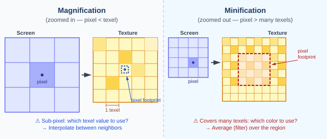
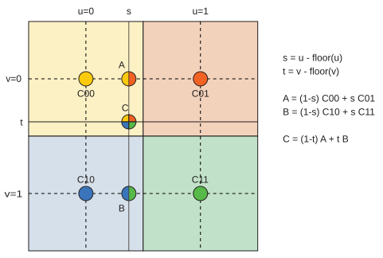
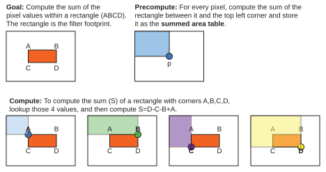
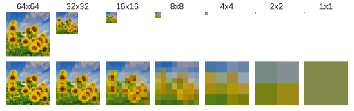
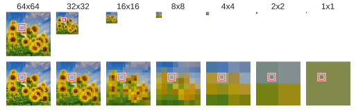
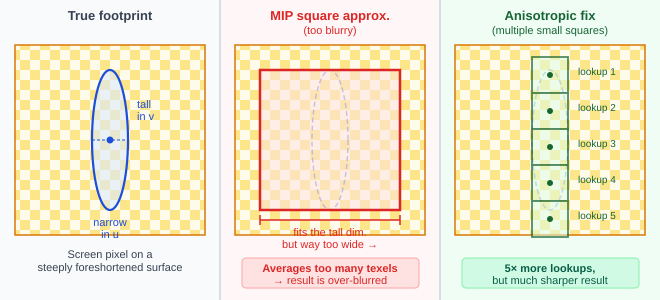
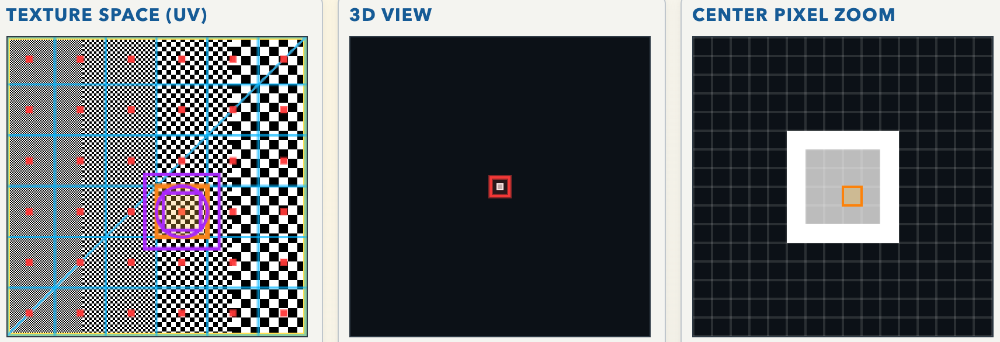
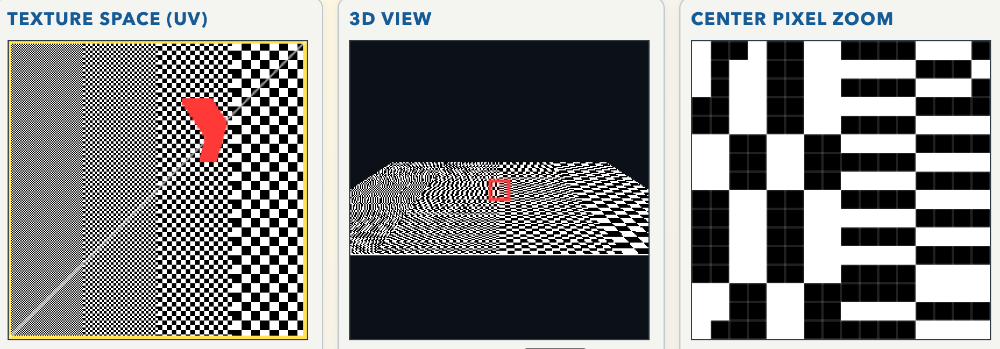
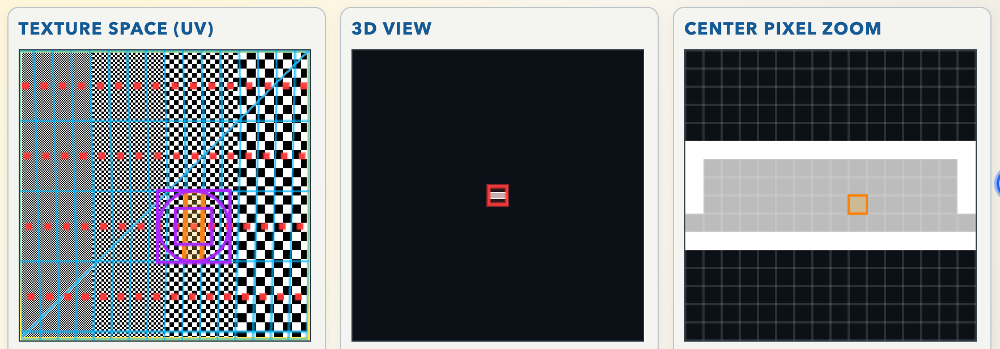
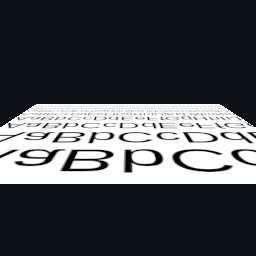

Page 15: Texture Filtering
Once the mapping process determines the texture coordinate for a pixel, it must look up the color in the texture image. This sounds simple — but it turns out to be one of the trickier parts of texture mapping, because the pixel and the texel grids almost never align perfectly.
This problem is called texture filtering, and getting it right makes an enormous difference to image quality. This page explains why the problem exists, what goes wrong if you ignore it, and the standard algorithms — bilinear interpolation, mipmapping, and anisotropic filtering — that modern hardware uses to solve it efficiently.
The 2023 lecture discusses the topic well:
Two Scenarios: Magnification and Minification
There are two distinct situations, depending on whether the object is close to the camera or far away:
{kind=link}

Magnification (left): the object is zoomed in, so one screen pixel maps to only a fraction of a texel — the pixel footprint is smaller than one texel. Minification (right): the object is zoomed out, so one screen pixel maps to many texels at once — the pixel footprint covers a large region of the texture.
In magnification, the surface fills many more pixels than the texture has texels. Adjacent screen pixels may both land inside the same texel. If we just round to the nearest texel, we get the same color for all those pixels, producing visible blocky artifacts.
In minification, the surface is rendered small. A single screen pixel corresponds to a large region of the texture — potentially dozens or hundreds of texels. If we only sample the one texel closest to the pixel center, we get an arbitrary color that ignores most of the texture underneath. The result is severe aliasing: moiré patterns, flickering in animation, jagged edges.
Nearest-Neighbor and Its Problems
The simplest possible approach is nearest-neighbor lookup: for any UV coordinate, just find the closest texel center and return its color.
For magnification, this creates blocky, pixelated results — you can see the individual texel squares. For minification, it is far worse. Imagine a checkerboard texture viewed from an angle. Up close, pixels map to small regions and each pixel correctly covers one or two squares. Far away, a single pixel covers a whole region of black and white squares. Nearest-neighbor picks the color of whichever square the pixel center happens to land on — pure black or pure white, with no averaging. The result is noisy, aliased patterns that shift and flicker as the camera moves.
Here is a simple example. The checkerboard texture is black and white. With nearest neighbor, all resulting pixels pick one pixel from the texture, so they will be black or white. If we’re lucky, we pick an equal number of each. More often, we’ll get weird patterns of black and white. The mip-mapping and anisotropic methods average pixels together, so we get shades of gray.
Here’s an even simpler example where we simply make the checkerboard smaller. Even in this simple case, nearest neighbor causes weird stuff to happen. Getting gray might not be perfect, but it’s the best we can do: we are trying to cram many texture pixels into a single image pixel.
Bilinear Interpolation (Magnification Fix)
A better approach for the magnification case is bilinear interpolation. Rather than snapping to the nearest texel center, we find the four texel centers surrounding the UV sample point and blend them together based on how close the point is to each.
{kind=link}

Bilinear interpolation: the query point lies at fractional position (s, t) within a 2×2 block of texels. Step 1 interpolates horizontally in each row to get intermediate values A and B. Step 2 interpolates vertically between A and B to get the final color. Total cost: 4 texture lookups.
The name comes from performing linear interpolation twice — once in the u direction and once in the v direction. The two steps can be written as:
where s and t are the fractional offsets of the sample point within the texel cell. The result is smooth interpolation between texel colors, eliminating the blocky appearance of nearest-neighbor. At the cost of four lookups instead of one, every in-between UV value gets a sensible blended answer.
Bilinear interpolation solves the magnification problem, but it does nothing for minification — the issue there is not how to interpolate between a handful of texels, but how to summarize a large region quickly.
Filtering: Averaging Over a Region
The right conceptual answer for minification is to average all the texel colors inside the pixel’s footprint, weighted by how much of each texel the pixel covers. This is sometimes called box filtering or area averaging.
When a distant pixel covers a black-and-white checkerboard, averaging black and white gives gray — which is the correct answer. The surface in the distance really is a mix of both colors, and gray is the best single color we can put in that pixel. The blurring this produces is not a mistake; it is the physically correct response to the resolution limit imposed by the pixel size.
The practical challenge is speed. A single pixel can map to hundreds of texels, and computing that average naively — by summing each texel individually — is far too expensive to do per pixel, per frame.
The practical solution is to (1) simplify the shape of the region to be a rectangle or square, approximating the actual filter needed; (2) to precompute partial results so that the actual texture computations are fast; and (3) to amortize the costs of these precomputations over many texture computations, so the time spent precomputing is made up for by lots of savings later. This three-part strategy, approximate, precompute, amortize, is key to many of the performance strategies in interaction graphics and games.
Summed Area Tables (Historical Approach)
First, we will look at a historical solution: the summed area table (SAT). The idea is to precompute, for every texel position (x, y), the sum of all texel values in the rectangle from the top-left corner of the texture to that point:
{kind=link}

With a pre-computed SAT, the sum over any axis-aligned rectangle (red) can be found with four corner lookups and three arithmetic operations — constant time regardless of the rectangle’s size.
To find the sum over any axis-aligned rectangle, you use inclusion-exclusion: look up the four corners and combine them as shown. Dividing by the number of texels in the rectangle gives the average in O(1) time, no matter how large the area.
The SAT demonstrates three key principles of graphics algorithm design: approximation, precomputation (do the expensive work once at load time) and amortization (spread that cost over many fast per-pixel queries). In practice, SATs have precision and memory issues on large textures, and they only support rectangular filter shapes. They are not the method modern hardware uses — but the ideas they embody are fundamental, and they lead directly to mipmaps.
Mip Maps
The solution used in all modern graphics hardware is the mip map, introduced by Lance Williams in 1983. The name is a Latin abbreviation: multum in parvo, “much in little.” Just as with summed area tables, mipmaps will allow us to compute the area of any sized filter footprint with a fixed number of lookups (8). It assumes the area is a square, but it avoids the problems of summed area tables.
The key idea of mipmaps is to precompute the texture at a sequence of progressively halved sizes and store the whole pyramid. The set of images, which form a pyramid is called a mipmap.
{kind=link}

Mip maps pre-compute a pyramid of successively smaller images. The 64x64 texture is also stored at 32x32, 16x6 atc. Reducing the image size causes naturally involves averaging. The bottom row shows the smaller images zoomed back to the full size. Flowers from publicdomainpictures.net.
{kind=link}
The intuition is that we reduce the size of the image, we also reduce the sizes of a region in the image. The texel footprint (the range of pixels we want to average over) in the biggest image would be smaller in the half-sized image, and even smaller in the quarter sized image. At some point, the region will fit within one pixel of the reduced size texture, and we can use bilinear interpolation to get the value.
{kind=link}

The square filter footprint becomes smaller as the images are downsized. At some point, it fits within one pixel. Here, that level is 4x4. The actual size is somewhere between 4x4 and 8x8. Therefore, mipmapping interpolates between levels.
Because we only have powers of 2 sizes, the level where the filter region exactly matches the pixel size is likely to fall between steps. Therefore, mipmapping uses interpolation between levels. We pick a level that is slightly too small, and a level that is slightly too big and interpolate between the levels. Because we use bi-linear interpolation within the levels (to get the right position between the pixels) and linear interpolation between the levels (to get the right level), the overall process is trilinear interpolation.
One detail that I skipped: this process works because we are assuming that the region we want to average over is a square. Otherwise, we might need to downsize a different amount in each direction. Therefore a key piece of mipmapping is that we approximate the actual region to average (the texel footprint) as a square.
Mipmapping with trilinear interpolation is the standard approach in computer graphics. When textures are loaded, the mipmap (the pyramid of images) are computed. Then at render time, every texture lookup follows these steps:
1. Approximate the footprint as a square. Rather than computing the exact shape of the pixel’s footprint in texture space, mip maps always approximate it as a square. We will see why this is a limitation in a moment.
2. Choose the right level. The footprint size tells us which level of the pyramid to use — specifically, the level where one texel is approximately the same size as the footprint square. In practice, the footprint typically falls between two adjacent levels.
3. Trilinear interpolation. Use bilinear interpolation within each of the two bracketing levels (4 lookups each), then blend the two results linearly based on how far the footprint size falls between them. Total cost: 8 texture lookups.
The mip map pyramid takes 33% more storage than the original texture (the sum of a geometric series), but the per-pixel cost is fixed at 8 lookups regardless of how large the footprint is. Like the SAT, mip maps precompute and amortize — the pyramid is built when the texture loads (one reason texture loading takes a moment in Three.js), and everything after that is fast constant-time hardware lookups.
In Three.js, MeshBasicMaterial, MeshLambertMaterial, and MeshPhongMaterial all use mip maps by default for loaded textures. You can control the filter mode through the texture’s minFilter and magFilter properties.
Anisotropic Filtering
Mip maps work very well when the pixel footprint is roughly square in texture space, but foreshortening can make it far from square. Consider a texture on a surface that recedes steeply from the camera — a road surface, a tiled floor. Pixels along the near edge map to small, nearly-square regions in the texture. Pixels farther away map to tall, narrow slivers.
{kind=link}

Left: The true pixel footprint in texture space is a tall, narrow ellipse — anisotropic (not equal in all directions). Middle: The MIP map forces a square that covers the tall dimension, dragging in far too many texels horizontally. The result is over-blurred. Right: Anisotropic filtering approximates the elongated footprint with a chain of small squares along its long axis, preserving sharpness at the cost of more lookups.
Because a mip map level must use a square footprint, it has to use the level that covers the larger dimension of the true footprint. This makes the square much too wide in the shorter dimension, averaging in texels that should not contribute. The result is excessive blurring, especially visible in textures on surfaces viewed at a glancing angle — floors, roads, and walls often look smeared far into the distance.
Anisotropic filtering addresses this by allowing non-square filter footprints. The simplest hardware approach approximates the elongated footprint with a series of small square mip-map lookups spaced along the longer axis, then averages them. The ratio of lookups is controlled by an anisotropy level parameter (often 1×, 4×, 8×, or 16×) — higher levels use more samples and produce sharper results at the cost of additional texture bandwidth.
In Three.js, you can set texture.anisotropy on a texture object. The maximum supported level on the current GPU is available from renderer.capabilities.getMaxAnisotropy(). A setting of 4× or 8× is usually a good trade-off between quality and performance.
The Texture Microscope
I created this demo so we could look at the pixels and texels “under a microscope” to really see what is going on with filtering. The demo has a lot of options, but I think it is worth playing with to really understand what filtering is doing.
The left side shows texture space. To start, there is a checkerboard texture (you can change it from a dropdown). In the center, there is the 3D view. The red square is shown “zoomed in” in the right view. The red square in the middle of the texture view is the center of all of the pixels.
To start, shrink the square by sliding the “Square Width” slider so the 3D object is just 4 or so pixels in size. The entire object will fit in the zoom region, and you’ll see it on the right. Because we are using mip-mapping, the object appears gray. The white border is a boundary artifact in the demo.
In the texture space display we see the footprint of each pixel in the zoom area. The red dots are the centers of the pixels, the cyan squares are the “footprint” of each pixels. The mip-map filtering filters each of those square regions around the red dot to compute the color for the red dot.
If you hover over a pixel in the zoom window, you will see information about that pixel in the texture space. The footprint of the pixel is shown in orange. Information about the mip-map is shown in purple. The circle is the estimate of the footprint. The two purple squares are the areas of one pixel in the two mip-map levels. One is too big, one is too small.
{kind=link}

To see the effects of anisotropy, tilt the plane. With nearest-neighbor filtering, it looks really terrible. Notice that the red blotch in texture space has an odd shape: the footprint of the entire object is split into two parts (because the square is made of two triangles), and parts are chopped off because they went off screen.
{kind=link}

If we shrink the object, the pixel footprints become large enough that we can see them. Here is the object shrunk enough that it fits into the zoom, using mip-mapping.
{kind=link}

With mipmapping, we get gray - which is correct since many texture pixels are being combined into each image pixel. But, if you notice, the actual footprint of the pixel is elongated because the projection is stretching the object. The mip-map squares are a poor approximation to the actual footprint. In this case, the texture is uniform enough that it doesn’t matter (the average of the square is about the same as the average of the rectangle). We can turn on anisotropic filtering, but it won’t help much.
For a better demonstration of the need for anisotropic filtering, try the “eye chart” texture. Tilt it back all the way. Notice how blurry it looks with mip-mapping: because mip-map is using a square to filter, it is averaging too many pixels. With anisotropic filtering, the system can use narrow rectangular filter regions that more correctly approximate the necessary filtering.
{kind=link}
{kind=link}

Anisotropic Filtering
Summary
Filtering is a critical component of texturing. Better filtering can lead to better image quality. However, filtering is limited: we can only put so much information in each pixel. It is better to blur things together than to have ugly jagged artifacts.
Texture filtering is implemented in the hardware and set up for us by Three.js. We need to understand what the options are. Mip-mapping is the usual choice. It requires pre-computing the image pyramid, but it provides decent quality filtering very efficiently.
On the next page we will learn more about how we use texturing in Three.js.
Next: Page 16 - Textures in THREE